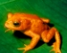

MENÚ SAPO DORADO IGUANA VERDE COCODRILO AMERICANO TORTUGA BAULA (MARINA) BOA CONSTRICTOR REGRESAR AL MENU
Sapo dorado

El sapo dorado o sapo de Monteverde era una especie de anfibio
anuro que vivía en unos pocos lugares en el bosque de Monteverde, en Costa Rica,
en América Central. Está clasificado por la UICN como extinto pues, desde 1989,
no se ha visto un solo ejemplar.
IGUANA VERDE "Iguana iguana"
La iguana verde, también conocida como iguana común es una especie de la familia Iguanidae.
Es un gran lagarto arbóreo. Mide hasta 2 m de longitud de cabeza a cola. Los machos alcanzan
entre 30 y 40 cm de longitud hocico-cloaca, las hembras cerca de 10 cm;
cola extremadamente larga y algo aplanada lateralmente.
Cocodrilo Americano
El cocodrilo americano, también conocido como lagarto real, lagarto amarillo
o cocodrilo de río, asimismo como cocodrilo narigudo, cocodrilo aguja, caimán de la costa, caimán
aguja o cocodrilo de Tumbes, pertenece a la familia de Crocodylidae.
Tortuga baula (marina)
Las tortugas marinas son un enlace fundamental con los ecosistemas marinos. Ayudan a mantener la salud de los lechos de pastos marinos y los arrecifes
coralinos, que benefician a especies con valor comercial, como el camarón, la langosta y el atún. Las tortugas marinas son representantes vivos de un grupo de reptiles
que han existido en el Planeta Tierra y han recorrido nuestros mares durante los últimos 100 millones de años. Las tortugas tienen un significado cultural muy importante
y un valor turístico considerable. Las tortugas marinas pueden poner más de 150 huevos por nido y pueden anidar varias veces en cada estación, con lo cual compensan las
altas tasas de mortalidad que impiden a la mayoría de las tortugas marinas llegar a la madurez.
Boa constrictora"Boa constrictor"
El hábitat de la especie varía, se le puede encontrar debajo de troncos de árboles caídos, piedras, en el suelo,
en grietas o cuevas, entre las ramas de los árboles, en construcciones viejas o abandonadas y muy comúnmente en áreas de cultivos.
Aparentemente la altitud es la que limita la distribución de esta especie, que se encuentra en una gran cantidad de habientes en elevaciones
bajas y moderadas entre los 0 y 1500 metros sobre el nivel del mar
Caracteristicas:
Caracteristicas:
Regresar al menú
Caracteristicas:
Regresar al menú
Caracteristicas:
Regresar al menú
Caracteristicas